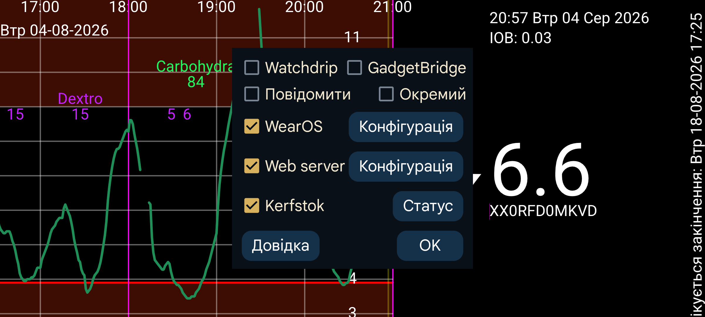

Наразі Juggluco має сім способів показувати значення глюкози на годиннику.
Коли Повідомити увімкнено, Android створює нове сповіщення щоразу після надходження значення глюкози. Деякі годинники отримують сповіщення лише тоді, коли воно створюється заново; для них потрібно ввімкнути Окремий. Для таких годинників також потрібно ввімкнути Окремий , щоб отримувати на годиннику сповіщення про сигнали.
Коли параметр увімкнено, Juggluco надсилає значення глюкози до Watchdrip+. Watchdrip+ передає на годинники MiBand/Amazfit циферблати зі значеннями глюкози.
Gadgetbridge дає змогу показувати на годинниках MiBand/Amazfit інформацію про погоду. Коли параметр Gadgetbridge увімкнено, Juggluco надсилає значення глюкози як нібито погодні дані. Це значно швидше за Watchdrip, але показує менше інформації. Juggluco розміщує значення глюкози та стрілку напряму в полі погоди, яке на годиннику відображається в розділі «Погода». Я не знайшов циферблата, який показував би саме це поле. Лише для mmol/L: ціла частина значення записується як максимальна температура, а дробова — як мінімальна. Значення mg/dL завеликі для температур, тому остання цифра стає мінімальною температурою, а решта — максимальною. Наприклад, 106 mg/dL перетворюється на максимальну температуру 10 і мінімальну 6.
Напрям зміни визначає погодну піктограму: сніг означає падіння глюкози, дощ — зростання. Напрям також записується як поточна температура: більше нуля означає зростання, менше нуля — падіння.
Kerfstok — програма для годинника, у якій можна вводити числа, наприклад дози інсуліну, а також показує поточне значення глюкози. Щойно надходить нове значення, Juggluco відправляє його до Kerfstok, тому там завжди показано найсвіжіші дані. Kerfstok може записувати всі види активності, які підтримує Garmin, і показувати швидкість та відстань. Див. Годинник→Стан Kerfstok→Довідка та https://www.juggluco.nl/Kerfstok
Програми можуть приймати одну з трансляцій глюкози Juggluco й передавати значення на годинник. Наприклад, G-Watch (Tizen OS або Wear OS) може отримувати дані з трансляції Glucodata; див. ліве меню→Налаштування→Обмін даними.
Juggluco містить вебсервер xDrip/Nightscout. Це дає змогу безпосередньо використовувати з Juggluco програми xDrip для годинників. xDrip показує нове значення лише кожні 5 хвилин, а Juggluco — щохвилини. Juggluco надсилає таким програмам найновіше значення, але лише коли програма на годиннику його запитує, тому вік даних залежить від частоти запитів. Наприклад, циферблати й поля даних Garmin запитують значення раз на 5 хвилин. Через xDrip дані часто були давніші на 10 хвилин; із прямим підключенням до Juggluco — не більше ніж приблизно на 6 хвилин. Для Garmin, якщо Kerfstok недоступний, є такі способи регулярно отримувати свіже значення. Віджет xDrip (https://apps.garmin.com/en-US/apps/73115e04-dc9f-4765-ad88-e7ae283ce995) можна використовувати під час запису активності. Якщо одна рука вільна, перейдіть до цього віджета, поки стандартна спортивна програма Garmin записує активність. Є також спортивна програма xDrip, яка регулярно оновлює глюкозу: https://apps.garmin.com/en-US/apps/aaf6533b-bca1-4365-9131-9f882f6f148c. Можна спробувати запускати її в момент, коли вона запитає значення одразу після його надходження. Поля даних і циферблати були б ідеальним рішенням, але обмеження Garmin значно зменшують їхню користь.
Раніше вебсервер Juggluco можна було використовувати з циферблатом для Fitbit: https://glancewatchface.com . Із середини 2024 року сторонні програми на годинниках Fitbit більше не дозволені: https://www.techradar.com/health-fitness/fitbit-watches-in-the-eu-will-lose-third-party-apps-and-watch-faces-heres-why . Імовірно, це рішення спричинило регулювання ЄС, можливо вимога дозволяти альтернативні магазини програм у Wear OS: прості фітнес-трекери без сторонніх програм теж дозволені, тож можна перетворити пристрій на такий. Деякі користувачі стверджують, що після зміни регіону на США й використання VPN сторонні програми знову встановлюються.
Докладніше про інтерфейс вебсервера: https://www.juggluco.nl/Juggluco/webserver.html
Існує версія Juggluco, перенесена на Wear OS. Дисплей адаптовано до меншого екрана та додано циферблат. Циферблат може бути встановлений як звичайний циферблат Wear OS і відображає, крім часу, поточне значення глюкози, отримане через Bluetooth.